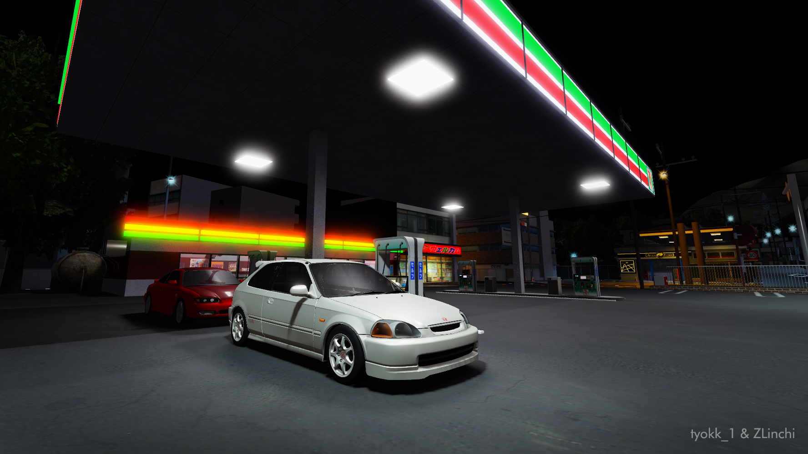

Hai perkenalkan nama aku Muhammad Rizal Shidiq. Aku
seorang mahasiswa dari
Universitas Islam Kalimantan Muhammad Arsyad Al-Banjari
Banjarmasin.
Aku tinggal di
Jl. Cendana II D, Kayu Tangi, Banjrmasin. Aku di sini
tinggal ngekos sendiri karna jauh dari orang tua, orang tua aku
sekarang sedang dinas di Lapas Kelas II A Kota Baru.
Foto di bawah ini adalah beberapa hobi Saya yaitu
main game dan menonton anime.
